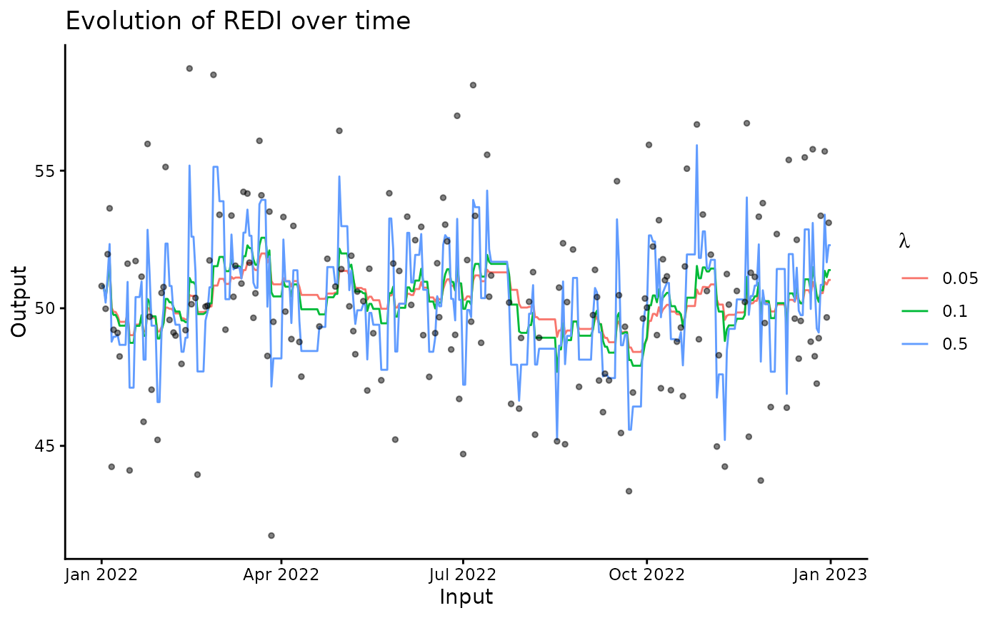

Compute REDI for all observed and missing input values in a dataset
REDI.RdWrapper function that converts the dataset to the adequate format, compute
values of REDI for each Input values, display a generic plot of the results
and return a tibble containing both data and corresponding REDI values.
Usage
redi(
data,
coef = c(0.05, 0.1, 0.5),
input = 1,
output = 2,
plot = TRUE,
by = "day",
format = "%Y%m%d",
summary_duplicate = mean
)Arguments
- data
A tibble or a data frame, containing an
Inputcolumn that is used as reference for the observations (e.g. time for longitudinal data), and anOutputcolumn specifying the observed values of interest (the workload).- coef
A number or vector, containing the values of the lambda coefficient used in the REDI computations, controlling the decay of the exponential weights. Default is c(0.05, 0.1, 0.5).
- input
A character or a number, indicating the name or the index of the
Inputcolumn (time).- output
A character or a number, indicating the name or the index of the
Outputcolumn (workload).- plot
A boolean, indicating whether results should be displayed. is TRUE.
- by
A number or a character string, indicating the reference time period between two observations. Possible values are 'day', 'week', 'month', 'year', or any arbitrary number. See documentation of the 'seq()' for additional information if necessary. Default is 'day'.
- format
A character string, indicating the date format of the input. Please read
lubridate::as_date(). Default is '%Y%m%d'.- summary_duplicate
A function, used to summarise Output values for duplicated Input values. Default is mean.
Value
A tibble containing 4 columns : Input (without duplicates),
Output, Lambda and REDI, which corresponds to the vector
returned by the loop_REDI() function.
Examples
data <- simu_db()
redi <- redi(data)
